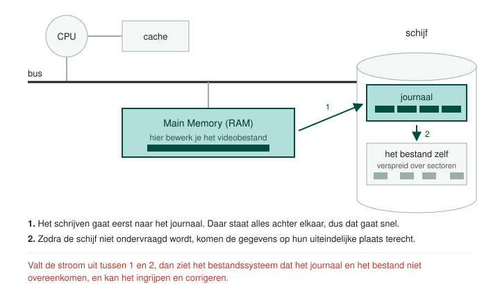

In een Windows omgeving is het meest gebruikte bestandssysteem NTFS. Deze afkorting staat voor New Technology File System.
Het is de opvolger van FAT32. De meest voor de hand liggende voordelen zijn dat je er zeer veel bestanden in kan opslaan (grote adresseringsruimte) die ook individueel zeer groot kunnen zijn. Je beschikt ook over een journaal.

In het groen zie je het Main Memory ofwel RAM geheugen. Zoals je weet gebeurt het manipuleren van bestanden en uitvoeren van programma's op deze plaats. Veronderstel nu even dat we een (groot) video bestand bewerken. Dit bestand is dus aanwezig in het RAM geheugen en wordt, door de gebruiker, regelmatig opgeslagen op de harde schijf.
Als het bestand toeneemt in grootte zal het hoogstwaarschijnlijk gefragmenteerd worden.
Wanneer dat het geval is dan staat dit verspreid over verschillende sectoren op de harde schijf en is de schrijftijd vrij hoog.
Een journaal heeft als eerste functie dat het een aaneengesloten ruimte op de harde schijf is waar dit bestand eerst tijdelijk naar gekopieerd wordt. Doordat er geen fragmentatie is wordt de schrijftijd op deze manier aanzienlijk korter.
Wanneer de harde schijf niet ondervraagd wordt zullen de bestanden uit het journaal gekopieerd worden naar hun uiteindelijke plaats.
De tweede functie van het journaal is dat het werkt als een soort van logboek. Beeld je even in dat de stroom uitvalt nadat er geschreven werd naar het journaal en er nog niet weggeschreven werd naar het uiteindelijke bestand. Door te gaan kijken naar het journaal en dan te vergelijken met het bestand zien we dat er iets niet klopt. Het bestandssysteem kan zo ingrijpen en corrigeren.
Type besturingssysteem: Windows
Maximale partitiegrootte: 256 TB (met MBR partitieschema: 2 TB)
Maximale bestandsgrootte: Theoretisch: 16 EiB, Praktisch 256 TB